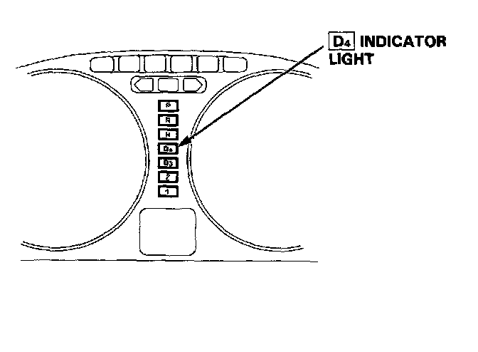
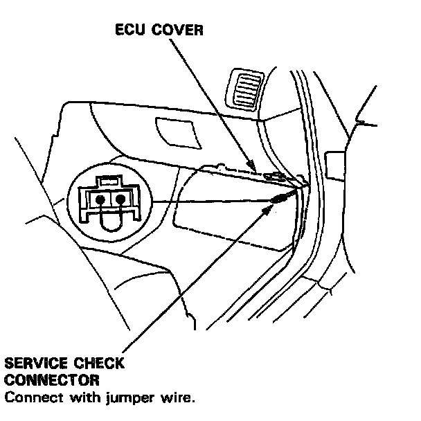
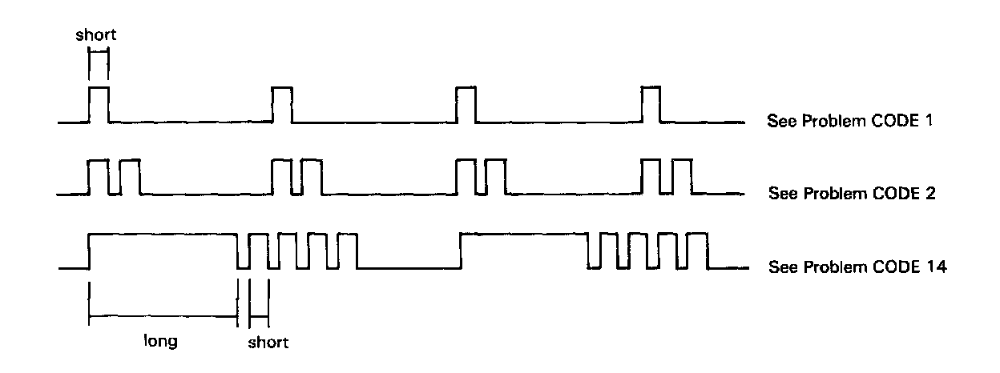
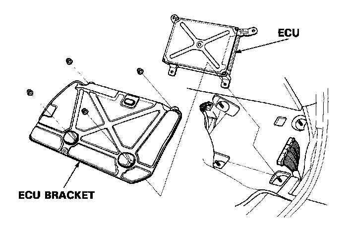
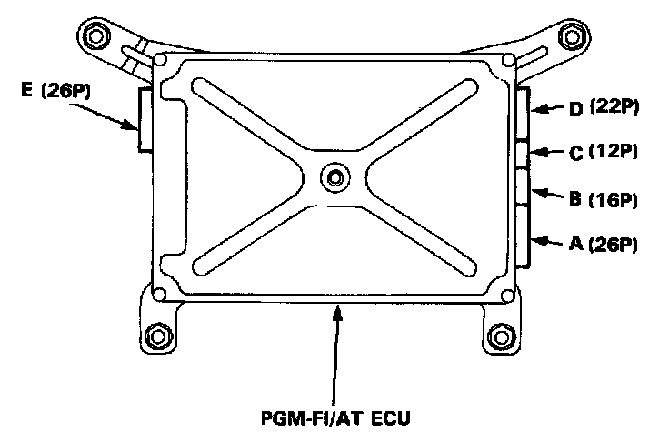
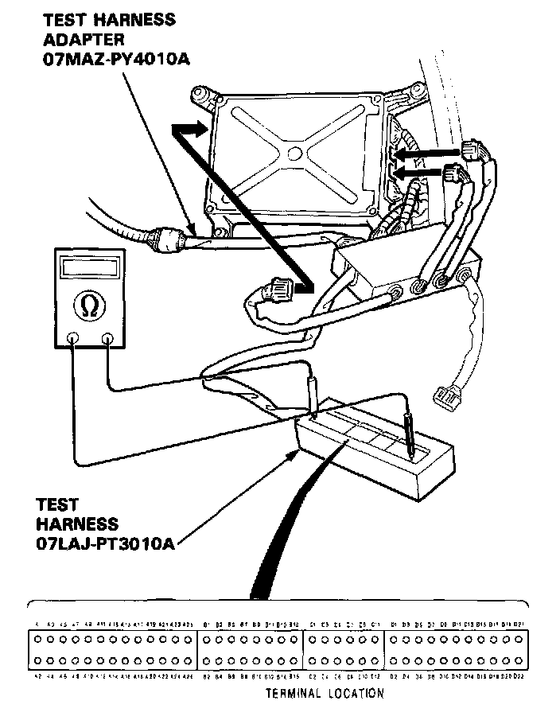

Reading and Clearing Diagnostic Trouble Codes
TROUBLESHOOTING PROCEDURESWhen the PGM-FI/AT Electronic Control Unit (ECU) senses an abnormality in the input or output systems, the D4 indicator light in the gauge assembly will blink. However, when the Service Check Connector (located on the ECU cover) is connected with a jumper wire, the D4 indicator light will blink the problem code when the ignition switch is turned on.


When the D4 indicator light has been reported on, connect the two terminals of the Service Check Connector together. Then turn on the ignition switch and observe the D4 indicator light.

Problem codes 1 through 9 are indicated by individual short blinks, Problem codes 10 through 1 7 are indicated by a series of long and short blinks. One long blink equals 10 short blinks. Add the long and short blinks together to determine the problem code. After determining the problem code, refer to the electrical system Symptom-to-Component Chart. DTC List - Transmission Control
Some PGM-FI problems will also make the D4 indicator light come on. After repairing the PGM-FI system, disconnect the No.15 ACG (S) fuse (7.5 A) in the under dash fuse box for more than 10 seconds to reset the ECU memory.
If the inspection for a particular failure code requires the use of Test Harness (07LAJ-PT3010A):
1. Remove the right door sill molding and the small cover on the right kick panel, and pull the carpet back to expose the ECU.
2. Remove the ECU bracket.

3. Disconnect the connector from the cooling fan control unit.
4. Connect the Test Harness Adapter to the test harness.

5. Disconnect the appropriate Connector (E: 26P, B: 16P or C: 12P) and connect it to the Test Harness.
NOTE: Modify the Test Harness (07LAJ-PT3010A) connector by removing the bar at both right and left ends with an X-acto knife from the A (26P) male connector block.

NOTE:
- The A section of the Test Harness corresponds to the E (26P) connector, while connecting to test the Test Harness Adapter.
- Unless otherwise noted, use only the Digital Multimeter, KS-AHM-32-003, for testing.